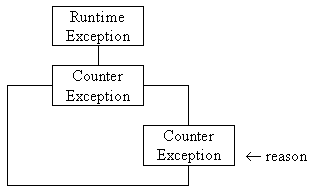

Everything in Java, apart from primitive
variable instances, is an object; including exceptions.
Consequently the exception which is thrown by the count() and unCount()
actions has to be an instance of a class derived from the RuntimeException class. (An instance of the RuntimeException itself
could be used, but this does not seem to be very good practise).

The class supplies a single constructor which requires a String called reason as an argument. This reason will be used by the run-time environment to explain why the exception was thrown if it is not caught and handled, as will be shown below.
The class is implemented as follows.
0008 package Counters;
0009
0010 class CounterException extends RuntimeException {
0011
0012 public CounterException( String reason) {
0013 super( reason);
0014 } // End CounterException constructor.
0015
0016 } // End CounterException